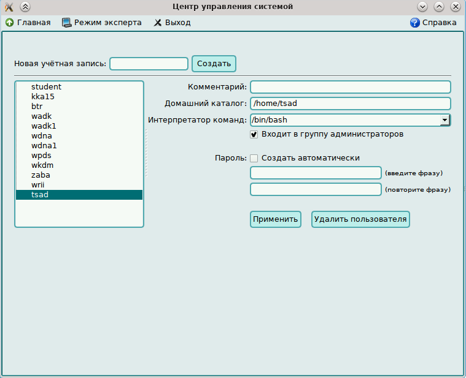

Лабораторная работа 1
1. Создать пользователя с использованием графической оболочки.
2. Создать пользователя в терминале программой adduser (или useradd).
3. Предварительно прочесть man
«Центр управления системой» > «Управление пользователями» > «Локальные учётные записи»


2.Открываем терминал вводим: sudo useradd tsad1
Что бы задать пароль вводим: sudo passwd tsad1


Comments from our customers
You can ask your question by filling in the form Callback
Paul Demichev
Web designer
When making such important decisions as the conclusion of the wage project, it is important to simultaneously run a number of conditions.
Oleg Topanic
∏porpammct
This is a Bank that we trust. Our history of working with Alfa-Bank has about 15 years. We have almost from the base
Julia Usina
∏obap
In 2010, we came to the conclusion that we need a payroll project. Naturally, we considered the offers of different banks
Serdyuk Elena
CTYαeHtka
In 2010, we came to the conclusion that we need a payroll project. Naturally, we considered the offers of different banks
Kulikov Vlad
γ∏aβHbi MeX∂HK
When making such important decisions as the conclusion of the wage project, it is important to simultaneously run a number of conditions.
Andrey Tikhonov
CβapK
This is a Bank that we trust. Our history of working with Alfa-Bank has about 15 years. We have almost from the base